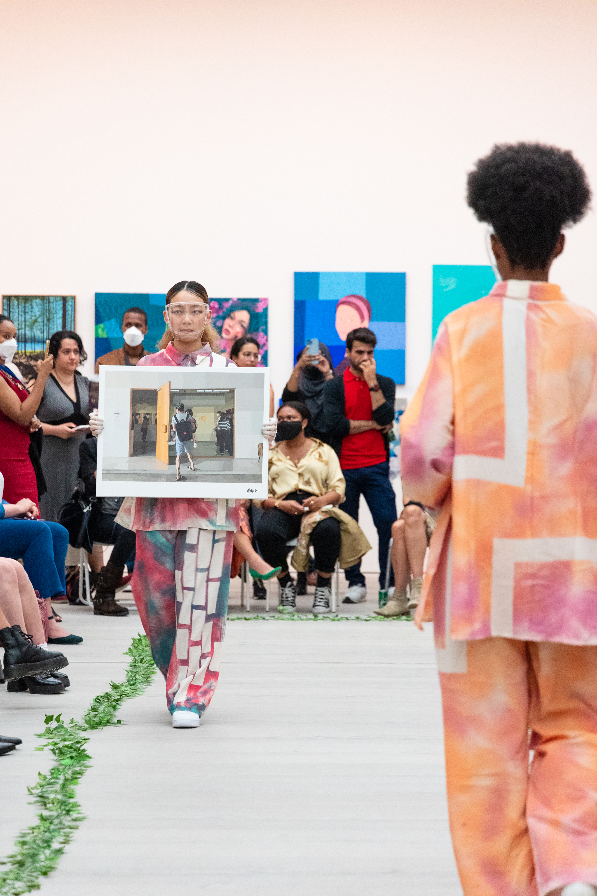
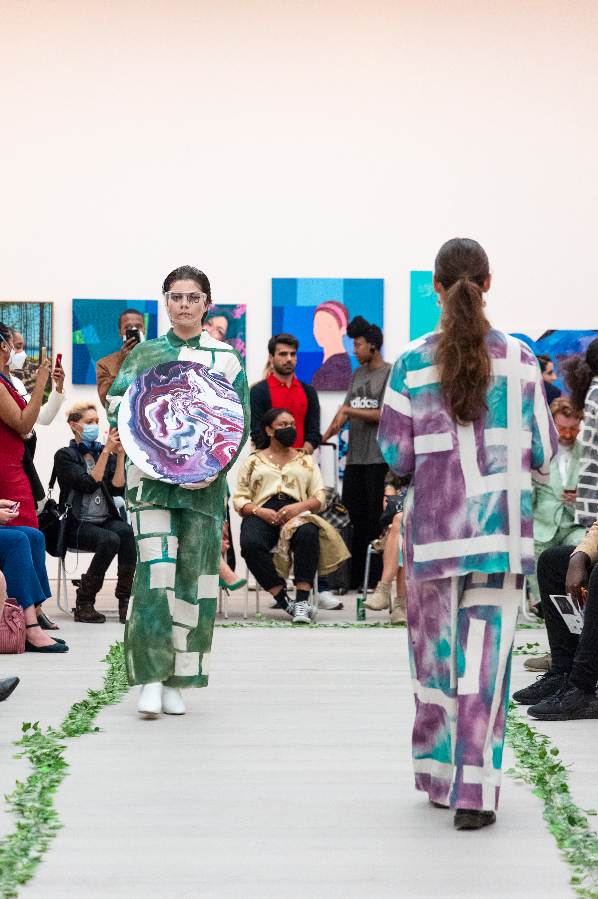
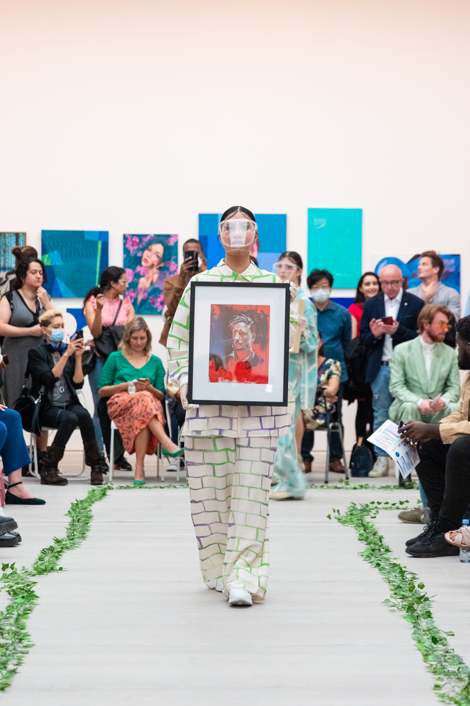
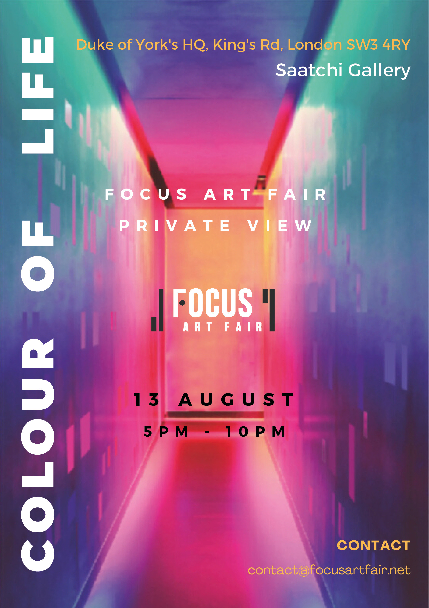
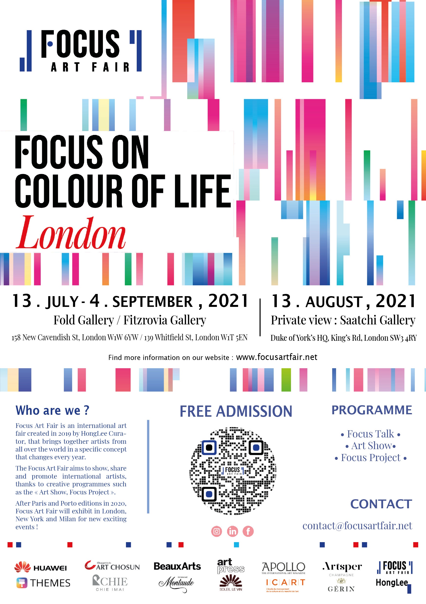

Color of Life
세상의 다양한 벽을 표현하다
제가 세 번째로 아트디렉터로써 일했던 프로젝트 입니다. 이전과 마찬가지로, 아트쇼 퍼포먼스의 의상 구상 및 제작, 모델의 이동 동선, 쇼에 사용할 음악, 작품의 순서 조율 및 조명 등 아트 쇼의 총 디렉팅을 맡았습니다.
컨셉은 'COLOR OF LIFE'로, 아트쇼에서 세상의 다양한 벽에 걸려 있는 작품들을 표현하기 위해 다양한 색깔의 스프레이와 테이프를 이용하여 의상을 준비했습니다. 제가 표현한 벽은 세상에 존재하는 것인지, 상상 속의 벽인지는 각자의 상상에 달려 있습니다.
또한 모델의 머리와 메이크업도 벽 너머의 나무와 덩굴을 표현하고자 했고, 작품과 옷 그리고 모델과의 하모니를 생각하며 진행했습니다.
컨셉은 'COLOR OF LIFE'로, 아트쇼에서 세상의 다양한 벽에 걸려 있는 작품들을 표현하기 위해 다양한 색깔의 스프레이와 테이프를 이용하여 의상을 준비했습니다. 제가 표현한 벽은 세상에 존재하는 것인지, 상상 속의 벽인지는 각자의 상상에 달려 있습니다.
또한 모델의 머리와 메이크업도 벽 너머의 나무와 덩굴을 표현하고자 했고, 작품과 옷 그리고 모델과의 하모니를 생각하며 진행했습니다.








